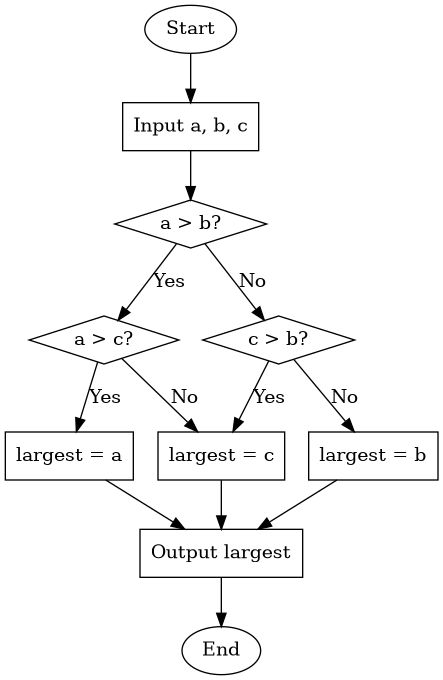
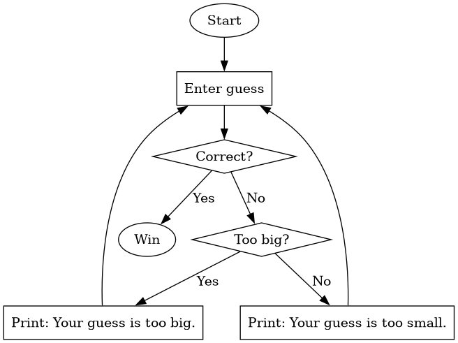

| Date | Section | Topic |
|---|---|---|
| Mon, Aug 24 | TP1 | Introduction to Python & Thonny |
| Wed, Aug 26 | TP2 | Variables & functions |
| Thu, Aug 27 | TP2 | Statements versus expressions |
| Fri, Aug 28 | Binary & floating-point numbers |
Today we introduced Python and the Thonny IDE (Integrated Development Environment).
We learned how to use the Python Shell and how to write Python scripts. We also covered the following:
+, -,
*, /, **)int, float,
and str)Try out each of the operations +, -,
*, /, ** in the shell.
Why doesn’t the following command calculate ? How could you fix it?
5 ** 1 / 2We talked about how operators follow an order of
operations, and if operators have the same level of precedence,
then they are computed left to right. We also talked about how some
operators don’t work for all types. For example, the +
operator concatenates strings, but the * operator is not
defined for strings.
Write a script to calculate the volume of a sphere.
# A script to calculate the volume of a sphere.
PI = 3.14159
radius = 4
volume = 4 / 3 * PI * radius ** 3
print("The volume of the sphere is:", volume)Which of the following Python commands work? Try them in the shell to find out.
n = 44 = nx = y = 1Write a program which uses two variables miles and
gals and prints out the miles per gallon for a car on a
tank of gas. Your output should look something like
You got 37.5 miles per gallon.
(depending on the values of your variables).
_.It is recommended to only use lower case letters only in most
variable names (except when you want to indicate that the variable is
constant and won’t ever change, in which case ALL_CAPS is
recommended). If a variable name has multiple words, then separate the
words with an underscore character, like: surface_area.
We talked about the following built-in functions.
printint, float, str (type
conversion functions)typeabs, roundhelpWe finished by talking about how to import functions
from modules. We imported the math module
which contains familiar math functions like sin(),
cos(), and sqrt(). You can use the command
dir(math) to list all of functions in the math
module.
Write a program to calculate miles per gallon and print the output rounded to 1 decimal place.
How could you tell if the sine and cosine function expect the input in degrees or radians? Test your idea in the shell and see what the default is.
What happens if you type math.sin without an
input?
What happens if you enter help(math.sin)?
What does the degrees() function do?
How could you calculate (i.e., the square root of pi) using the math library?
Today we talked about some of the isses that came up in the quadratic formula programs from yesterday.
The first error we looked at was this incorrect line of code:
(x1 = (-b + math.sqrt(b ** 2 - 4 * a * c)) / (2 * a))To explain this error, we talked about the difference between statements and expressions in Python.
Every expression is a statement, but not vice versa. In Python, every valid line of code is a statement.
# Example statements
import math
a = 5.0
b = 3 + a
print("Hello")
# Example expressions
1+1
5.0
(-b + math.sqrt(b ** 2 - 4 * a * c)) / (2 * a)Notice that statements can include expressions. A special kind of statement is an assignment statement where you assign a value to a variable. Every assignment statement has the form:
variable_name = # some expressionYou can always wrap an expression in parentheses, and it will still
be an expression with the same value. But, the reason the line of code
(x1 = (-b + math.sqrt(b ** 2 - 4 * a * c)) / (2 * a)) is
not correct is that an assignment statement is not an expression, and
cannot be wrapped in parentheses.
It is a good idea to break code into small reusable pieces. We compared some different implementations of the quadratic formula from last time to see how we could make the code easier to read, and also easier to fix if something goes wrong.
We finished by introducing if-then-else statements in Python. We ran into the problem that our quadratic formula program sometimes gives and error message if you try to take the square root of a negative number. To fix this, we added an if-then statement to check that the number inside the square root is not negative before trying to calculate the two roots.
import math
a = 1
b = 2
c = 3
if (b**2 - 4*a*c >= 0):
x1 = (-b + math.sqrt(b**2 - 4*a*c)) / (2*a)
x2 = (-b - math.sqrt(b**2 - 4*a*c)) / (2*a)
print("The roots are", x1, "and", x2)
else:
print("There are no roots.")We finished with this challenge problem:
Yesterday, we used a lot of different approaches to find the maximum of three distinct numbers. As we saw, it can get challenging to keep track of the logic. Engineers often use a flow chart to keep track of the steps in an algorithm.
Here is one possible flow chart for an algorithm to find the largest of three numbers:

Computers store numbers & data in binary. We talked about how to write whole numbers in base-2.
Convert to base-10.
Convert to base-10.
Convert to base-10.
Convert to base-10.
After that we talked about how to convert base-10 integers to base-2. That is a little bit harder, so we introduced the algorithm below which can be described using a flow chart:
After we introduced binary numbers, we talked about bits and how many integers can be stored using bits.
The maximum number of rupees (money) you could have in the original Zelda game was 255 because the data was stored using 8 bits.

Unlike a lot of programming languages, Python allows arbitrarily large integers. This avoids integer overflow errors, but it can be slower for large integers.
We also talked about how computers store floating point numbers. Most modern programming languages (including Python) store floating point numbers using the IEEE 754 standard.

Because there are only a limited number of bits to store floating point numbers, there is a limit to how large and how accurate they can get.
Compare the output you get when you type 2**1024
versus 2.0**1024 in the Python shell.
Compare the output for 2.0**(-1024) versus
2**(-1070). Notice that you lose precision with small
floating point numbers, but you don’t get an error the way you do with
large floats.
Why do you get an incorrect answer when you enter
0.1+0.1+0.1?
We finished with this workshop:
| Day | Section | Topic |
|---|---|---|
| Mon, Aug 31 | TP3 | Functions |
| Wed, Sep 2 | TP3 | Local vs. global variables |
| Thu, Sep 3 | TP4 | For loops |
| Fri, Sep 4 | TP4 | Turtle graphics |
To create your own functions in Python, use the def
keyword to define them:
def hello():
print("Hello!")Every function is a function object. So
function is a type just like int,
float, and str. When you refer to a function
object in Python, there is a difference between the
name of the function (which is hello in
the previous example) and the way you call the function
to get it to run by typing hello(). Here is another
function example.
def print_twice(string): # The first line is called the **header**
print(string) # All of the other lines are called the **body of the function**
print(string) # The code in the body must be indented
# Code that is not indented is not part of the function.
print_twice("Hello!")This function has a parameter which is the variable
called string in the parentheses. We you call this
function, you need to include an argument which is a
value for the parameter.
>>> print_twice("Hello")
Hello
Hello
>>> print_twice(5)
5
5In this example, “Hello” and 5 are arguments. The variable called
string in the function is a parameter. Weirdly, when we
pass the argument 5 to the function, then the parameter called
string stores the value 5 which is an integer not a string!
But that is okay, because Python knows how to print integers.
When you create a function, you should always include a docstring that briefly explains what the functions does. A docstring is a comment that is written using triple quotes instead of the hash symbol. Here is an example.
def hypot(a, b):
"""Calculates the hypoteneuse of a right triangle with legs a and b."""
c = math.sqrt(a ** 2 + b ** 2)
print(c)The advantage of a docstring over a regular comment is that it can take up multiple lines. Python style guides recommend using docstrings even for one line descriptions of functions, since you might need to add more explanation later.
Functions can have as many parameters as needed. Try to make your own functions to do the following.
Some functions return values and some functions don’t. For example,
math.sqrt(4) returns the value 2.0, so it can
be used as an expression. But the function print("Hello")
does not return a value.
What are the values of the variables x and
y below?
x = print(4)
y = abs(-5)To create a function that returns a value, use the return keyword.
circle_area function to return the area of a
circle instead of printing the area.multiply_by_2 function that returns twice its
input.Today we talked some more about functions. We introduced local variables and global variables. Compare these two programs.
def circle_area(radius):
PI = 3.14
area = PI * radius ** 2
return arearadius = 5
PI = 3.14
area = PI * radius ** 2 Any variable created in a function body is local, which means it can only be used inside the function. You won’t have access to local variables outside the function. Variables defined in a program that aren’t parameters or defined in the body of a function are global and can be accessed anywhere in a program. But if you try to change the value of a global variable inside of a function, it creates a new local variable inside the function instead!
Important: Avoid using global variables, except for constants.
Here is a function that calls another function in its body:
def cylinder_volume(radius, height):
"""Returns the volume of a cylinder."""
return circle_area(radius) * heightsales_tax that returns the sales tax
(5.3% in Virginia) for an item.print_receipt that prints three
things: The base price of the item, the sales tax, and the total
price.We finished by introducing recursive functions which are functions that call themselves. In order to make a recursive function that doesn’t get stuck looping forever, you need to use an if-then statement with an escape condition. For example:
def countdown(n):
"""Print the numbers from n down to 1."""
if n > 0:
print(n)
countdown(n - 1)What happens if you call countdown with a negative
number as the argument? Why does that happen?
What happens if you call countdown with a large
value like 1000?
Write a recursive function to make triangles of different sizes like this:
** *** **** *****
* ** *** ****
* ** ***
* **
*Today we introduced for-loops. We started with two example functions to demonstrate how they work.
def box(n):
"""Prints an n-by-n square made of * symbols."""
for i in range(n):
print("*" * i)
def countup(n):
"""Print the first n positive numbers."""
for i in range(1,n+1):
print(i)These examples use the range function. (Try asking ChatGPT or Claude to explain the Python range function).
Python is zero-indexed which means that by default it starts counting at zero.
Write a function to print the positive odd numbers below n.
Write a function to print the first n perfect squares (i.e., 1, 4, 9, 16, etc.)
Write a function to print a triangle with n rows like this:
*
**
***
****We finished by talking about accumulator variables in loops. I showed this example.
def add_odd_numbers(n):
"""Returns the sum of the odd numbers less than n."""
total = 0 # total is an accumulator variable
for odd in range(1, n, 2):
total = total + odd
return totalWrite a function to print an upside down triangle with n rows:
****
***
**
*Write a function to print a hollow n-by-n square, like this example when n is 4:
****
* *
* *
****Write a function that uses a for-loop with an accumulator variable to multiply the numbers 1, 2, …, n. In other words, write a function to compute the factorial of n.
Write a function called sum_of_squares that adds up
all of first n positive perfect squares.
Today we played with turtle graphics
using the turtle module in Python.
Use the commands forward(100) and
left(90) to draw a rectangle.
Write a function to draw a rectangle of any length and width.
Write a function to draw an equilateral triangle.
Here is an example using a for-loop to make a polygon with any number of sides.
from turtle import *
def polygon(side_length, n):
"""Draw a polygon with n sides."""
for i in range(n):
forward(side_length)
left(360 / n)Use for-loops to implement these examples:
Use the circle(radius) function to draw a picture
like this one.

Write a function to draw a bullseye with n rings, like this:

Hint: To get circles with the same center, you need to move the
turtle from the center the edge of the circle without drawing a line.
Use the penup() function before moving to avoid drawing.
Then use pendown() to resume drawing when you
move.
| Day | Section | Topic |
|---|---|---|
| Mon, Sep 7 | Labor day, no class | |
| Wed, Sep 9 | TP7.3 | While-loops |
| Thu, Sep 10 | TP7.3 | While-loops con’d |
| Fri, Sep 11 | TP5 | Boolean expressions |
Today we introduced while-loops. A while-loop is an alternative to a for-loop that is often useful when you don’t know how many steps you need to repeat. We started with these examples:
Example 1: Counter
count = 0
while count < 100:
count = count + 1
print(count)Example 2: Password checker
password = input("Enter the password. ")
while password != "banana":
print("That's not the correct password.")
password = input("Enter the password. ")
print("Welcome, you entered the correct password!")Write a while-loop to print the odd numbers between 0 and n.
Use the flow chart below to write a guessing_game
program. It should have a while-loop that runs until the user inputs the
correct number. If the user guesses the wrong number, tell them if they
are too high or too low before their next guess. Hint: Be sure to
convert the user input from a string to an integer using the
int function.

Change the following function so that it uses a while-loop instead of a for-loop:
def countdown(n):
"""Count down from an integer n, printing each number. When you get to zero, print 'Go!'"""
for i in range(n, 0, -1):
print(i)
print("Go!") def countdown(n):
"""Count down from an integer n, printing each number. When you get to zero, print 'Go!'"""
while n > 0:
print(n)
n = n - 1
print("Go!")Write a while-loop to repeat a string until the total length is
more than
.
You’ll need to use the len function which returns the
length of a string.
Today we talked about while-loops again. We started with Heron’s algorithm for finding square roots.
What happens when you compute square_root(10) with
this function? Why doesn’t it work?
def square_root(a):
"""Uses Heron's algorithm to find the square root of a."""
x = a
while x**2 != a:
x = (x + a/x) / 2
return xWe talked about why it is a bad idea to use != and
== with floating point numbers. We also talked about the
difference between a single equal sign = which is the
Python assignment operator versus a double equal sign
== which is a Python comparison operator.
Python has 6 comparison operators: (==, !=,
>, <, >=, and
<=).
Here is a better way to write the square root function. Notice the accuracy parameter has a default value.
def square_root(a, accuracy = 10 ** (-12)):
"""Uses Heron's algorithm to find the square root of a."""
x = a
while abs(x**2 - a) > accuracy:
x = (x + a/x) / 2
return xNext we looked at an example with an accumulator variable.
"""Keeps track of the running total of numbers entered by the user."""
print("Enter integers to add. Enter the word done when you are finished.")
total = 0
while True:
user_input = input("> ")
if user_input == "done":
break
else:
total = total + int(user_input)
print("The current total is:", total)Re-write this program using a loop without a break statement.
Re-write this program as a function that returns the final total
when the user enters “quit”. Note: the return keyword also
breaks out of loops.
Write a factorial function using a loop. Recall that
the factorial function inputs a positive integer
and returns the product of 1 * 2 * 3 * ... * n.
Write a program to add the fractions for up to 100. Would it be better to use a while-loop or a for-loop?
Write a program to add the fractions until the total is greater than 100. Would it be better to use a while-loop or a for-loop?
Today we talked about Python operators. We
introduced the modulus (%) and
floor division (//) operators with these
examples:
23 // 5
23 % 5
-100 // 12
-100 % 12
What day of the week will it be exactly one month from now on October 11 (without looking at a calendar)?
We also reviewed how the Boolean operators
and, or, and not work.
(True and False) or not TrueThen we did this workshop in class.
days that inputs a number of
minutes, and then prints how long that is in days and hours and leftover
minutes. For example, days(3015) should print 2 days, 2
hours, and 15 minutes.| Day | Section | Topic |
|---|---|---|
| Mon, Sep 14 | TP5 | Integer division and modulus |
| Wed, Sep 16 | TP5 | Integer division and modulus |
| Thu, Sep 17 | TP8 | Strings indices & slicing |
| Fri, Sep 18 | TP8 | String methods |
We started today by talking about how to trace a loop or a program. We did this example in class:
n = 365
total = 0
while n > 0:
digit = n % 10
total = total + digit
n = n // 10
print(total)To trace a program, make a table with a column for every variable in the program. Follow the program line by line, and update the values of the variables in the columns as you go.
After that, we did these programming exercises involving modular arithmetic.
For any integer , the Collatz sequence is obtained by following this rule:
Write a function with a while-loop to print the Collatz sequence for any positive integer . The Collatz conjecture is a famous unsolved math problem which predicts that you will eventually reach 1 no matter which you start with.
Write a function called collatz_length that returns
the length of a Collatz sequence starting at
instead of printing the sequence.
Use the collatz_length function to find longest
Collatz sequence for the numbers from 2 to 999.
Which number between 2 and 999 has the longest Collatz sequence?
We began by reviewing the coins problem from last time. Then we did these exercises in class.
Write a function to print all positive integer divisors of
.
For example, divisors(12) should print the numbers 1, 2, 3,
4, 6, 12.
Write a program to solve Brahmagupta’s Egg Problem (from the 7th century):
An old woman goes to market and a horse steps on her basket and crushes her eggs. The rider offers to pay for the damages and asks her how many eggs were in the basket. She does not remember the exact number, but when she had taken them out two at a time, there was one egg left. The same happened when she picked them out three, four, five, and six at a time, but when she took them seven at a time they came out even. What is the smallest number of eggs she could have had?
Write a function that returns how many divisors
has. For example, count_divisors(12) should return
6.
How could you use the count_divisors function to
print all of the prime numbers below 1000? Recall that a number is prime
if its only divisors are 1 and itself.
A year is a leap year if it is divisible by 4 but not by 100,
unless it is divisible by 400 in which case it is a leap year. For
example, 1900 was not a leap year, but 2000 was. Write a function called
is_leap_year that determines whether a given year is a leap
year or not. It should return a Boolean value (True or
False).
We started by talking about Boolean valued
functions. We did the example of determining whether a year is
a leap year from the additional practice problems yesterday. We ended up
writing two versions of the is_leap_year function, one
using if-then statements (including the else-if keyword
elif):
def is_leap_year(year):
"""Returns True if year is a leap year, otherwise returns False."""
if year % 4 == 0 and year % 100 != 0:
return True
elif year % 400 == 0:
return True
else:
return FalseSince the conditions we are checking are already Boolean expressions, we can skip if-then statements entirely and just return the value of a single Boolean expression:
def is_leap_year(year):
"""Returns True if year is a leap year, otherwise returns False."""
return (year % 4 == 0 and year % 100 != 0) or (year % 400 == 0):You can decide for yourself which version of the
is_leap_year function you prefer. We finished our
discussion of Boolean valued functions with the following exercise.
is_leap_year function in a loop to print the
next 20 years, with an asterisk to mark leap years.After that, we talked about Python strings.
# Some example strings
fruit = "banana"
alphabet = "abcdefghijklmnopqrstuvwxyz"
string = "The quick brown fox"Each character in a string has an index. For
example, the indices of string are shown below.
| string | T | h | e | q | u | i | c | k | b | r | o | w | n | f | o | x | |||
|---|---|---|---|---|---|---|---|---|---|---|---|---|---|---|---|---|---|---|---|
| index | 0 | 1 | 2 | 3 | 4 | 5 | 6 | 7 | 8 | 9 | 10 | 11 | 12 | 13 | 14 | 15 | 16 | 17 | 18 |
What is the value of alphabet[3]? What is
alphabet[0]?
How could you get the last character in alphabet?
What error message do you get if you ask for
alphabet[26]?
What happens if you ask for the character at a non-integer index,
like fruit[1.5]?
You can also access characters in a string using negative index values. These count from the end of the string backwards.
| string | b | a | n | a | n | a |
|---|---|---|---|---|---|---|
| negative index | -6 | -5 | -4 | -3 | -2 | -1 |
alphabet[-2]?To get the length of a string, use the Python function
len.
What is len(alphabet)?
What is len("6")?
What is len("")?
You can get a substring by slicing the string using
this pattern: string[start:stop].
"brown" from the string
string = "The quick brown fox"?You can use positive or negative index values when you slice a string. If you want to slice all the way to the end, you can leave the end blank:
alphabet[-3:]?You can loop through the characters of a string using a for-loop:
string = "hello"
for char in string:
print(char)Write a function called count_char. It should input
a string and a character, and return the number of times that character
appears in the string. For example
count_char("banana", "a") # should return 3. Write a loop to print all consecutive substrings of a given length. For example,
print_substrings("banana", 4) # should print "bana", "anan", and "nana" Hint: Unlike the count_char function,
it is not a good idea to loop through the characters in the string.
Instead, loop through the index numbers for the starting positions of
substrings you want to print.
Write a function called count_substrings that inputs
a string and substring, and counts how often that substring appears in
the string. For example
count_substring("banana", "an") # should return 2. Today we talked about string methods. A method is a special kind of function that belongs to the object you are using it on. To call a string method, you use the following syntax.
Python has lots of string methods, but today we talked about some of the most important examples.
The count method. Try the command
"banana".count("a"). What does the count
method do? Does it work if the additional argument is a substring like
"an" instead of a single character?
The find method. Returns the index where the first example of a substring can be found in a larger string. If the larger string does not contain the substring, then it returns .
"banana".find("na")?"banana".find("x")?"banana".find("a")?The upper and lower methods. Try these commands:
"Banana".upper() and
"Banana".lower().
The replace method. What does the replace method
do? Try these examples to see:
"banana".replace("a", "b")
We did these practice problems:
count_vowels that returns how
many vowels (a, e, i, o, u) there are in a string. It helps to use the
.lower() method to avoid having to check for upper case
vowels too.This example let us talk about method chaining when
you call methods like this: x.method1().method2().
Use method chaining to remove punctuation and make every letter
lower case for this string: "hELLo, WOrlD!".
Use method chaining to write an expression that converts a string
to lower case and replaces spaces with dashes. So it should convert
"Week 4 Notes" to "week-4-notes".
| Day | Section | Topic |
|---|---|---|
| Mon, Sep 21 | TP10 | Lists |
| Wed, Sep 23 | TP10 | The in operator |
| Thu, Sep 24 | docs | Sequence types |
| Fri, Sep 25 | TP10 | 2-dimensional lists |
Today we introduced lists in Python. Lists are a type of object the can store more than one value. We introduced how to define a list using square brackets (including an empty list).
# Example lists
fruits = ["apple", "banana", "cherry"]
squares = [1, 4, 9, 16, 25, 36]
mixed = [4, True, "ten", 3.14] # Unlike Java arrays, lists can contain more than one type. len)
There are two different ways to loop through the elements in a list.
# Looping through each element in a list
fruits = ["apple", "berry", "cherry"]
for fruit in fruits:
print("I like " + fruit + " pie")# Looping through each index in a list
fruits = ["apple", "berry", "cherry"]
for i in range(len(fruits)):
print("I like " + fruits[i] + " pie")Write a function called multiply that multiplies all
of the numbers in a list together and returns the result. Use a loop
with an accumulator variable to accumulate the product as you
go.
Write a function called print_lengths that inputs a
list of strings, and then prints out the length of each string.
We finished with this example, which requires us to use an empty list
as an accumulator variable, and then add new elements to the list as we
go. To add an element to a list, use the .append
method.
Write a function called return_lengths that inputs a
list of strings, and then returns a new list that contains the length of
each string in the original list. For example:
return_lengths(["apple", "berry", "cherry"]) # Should return [5, 5, 6]We started talking about the in operator in Python. We did this exercise in class:
print_common_elements(list1, list2)
which prints any elements that appear in both list1 and
list2. Hint: You only need to use a single loop combined
with a single if-then statement involving the in
operator.After that we talked about reasons why you would want to loop through the indices of a string or list instead of the elements themselves. We talked about how to solve these two problems:
Write a function to print all continuous length 3 substrings of a string.
Write a function to return the index of the first even element in a list of numbers (or -1 if there are no even elements).
Write a function called repeat_pair that returns
True if a string has two consecutive characters that are the same
(otherwise return False).
What happens if you use your function on a list instead of a string. Does it still work?
We did a workshop in class.
What is "Test this"[-1]?
Can you slice from a range? Try it out: what is
range(10)[2:5]?
Can you add two ranges together? What is
range(4) + range(5)?
Today we introduced 2-dimensional lists. We started with this example. Suppose I have a grid with data like the following:
| Student | Homework | Midterm Exam | Final Exam |
|---|---|---|---|
| Alice Adams | 90 | 85 | 80 |
| Bob Brown | 80 | 90 | 87 |
| Charlie Clark | 60 | 75 | 72 |
| Daisy Davis | 78 | 69 | 75 |
| Edward Evans | 81 | 90 | 97 |
I could store each student’s data in a Python list.
student_data = [
["Alice Adams", 90, 85, 80],
["Bob Brown", 80, 90, 87],
["Charlie Clark", 60, 75, 72],
["Daisy Davis", 78, 69, 75],
["Edward Evans", 81, 90, 97]
]What is the value of student_data[1]?
What is the value of student_data[-1][3]?
How would you select the midterm grade for the 4th student?
Write a for-loop to print every entry in the last column.
Suppose that the final grade for the course above is 20% homework, 30% midterm exam, and 50% final exam. Write a loop that prints each student’s name and their final grade.
Two-dimensional lists are convenient for storing the data in many board games.
board that stores
the data from this tic-tac-toe board.| X | ||
| O | ||
| O | X |
"X" to the top right corner of the
tic-tac-toe board?You can also use double indexing for other data structures, like lists of strings:
Suppose we have a list:
lst = ["How", "are", "you", "today?"]What is lst[3][2]?
Here is an example with triple indexing:
triple = [
["One", "list"],
["Two", "lists"],
["One", "more", "list"]
]What is the value of triple[-1][1][0]?
Write a function called row_sums that inputs a
2-dimensional list of numbers, and returns a list with the sum of the
numbers in each row. For example:
row_sum([[1, 2], [3, 4], [5, 6]]) # should return [3, 7, 11]Write a function called column_sums that inputs a
2-dimensional list of numbers, and returns a list with the sum of the
numbers in each column. You can assume that every row has the same
number of elements. For example:
column_sum([[1, 2], [3, 4], [5, 6]]) # should return [9, 12]| Day | Section | Topic |
|---|---|---|
| Mon, Sep 28 | TP6 | Recursion |
| Wed, Sep 30 | TP6 | Recursion with return values |
| Thu, Oct 1 | Review | |
| Fri, Oct 2 | Midterm 1 |
Today we talked about how to trace a recursive function. We started with this example:
def fib(n):
"""Computes the n-th Fibonacci number"""
if n <= 1:
return n
return fib(n-1) + fib(n-2)
print(fib(5))We made a table showing how the variable n and the
return value change as the function recursively evaluates
fib(5).
| n | return expression | final value |
|---|---|---|
| 5 |
fib(4) + fib(3)
|
5 |
| 4 |
fib(3) + fib(2)
|
3 |
| 3 |
fib(2) + fib(1)
|
2 |
| 2 |
fib(1) + fib(0)
|
1 |
| 1 | 1 | 1 |
| 0 | 0 | 0 |
After that example, we did this:
Write a recursive function is_palindrome to check if
a string is a palindrome (a word that is spelled the same forward and
backward like “racecar”). Hint: Use string[0] and
string[-1] to check if the first and last letters are the
same. Then use string[1:-1] to get the middle part of the
string. A string of length one or zero is automatically a
palindrome.
Write a recursive function to add up all of the numbers in a list.
We started by going over example 2 on the workshop from last time. Then we traced another recursive function example.
def split_string(string):
"""Returns a list of substrings separated by commas."""
if "," in string:
location = string.find(",")
return [string[:location]] + split_string(string[location+1:])
return [string]
print(split_string("1,cat,2,dog"))We made a table to keep track of the variables in the loop, and what gets returned (both the expression and its eventual value).
string
|
location
|
Return expression | Final return value |
|---|---|---|---|
"1,cat,2,dog"
|
1 |
["1"] + split_string("cat,2,dog")
|
["1", "cat", "2", "dog"]
|
"cat,2,dog"
|
3 |
["cat"] + split_string("2,dog")
|
["cat", "2", "dog"]
|
"2,dog"
|
1 |
["2"] + split_string("dog")
|
["2", "dog"]
|
"dog"
|
undefined |
["dog"]
|
["dog"]
|
In Python it is usually recommended to use loops rather than recursion, when possible.
split_string function above without using
recursion. Use a while-loop instead.One way to calculate the remainder of a (positive) number modulo
7 is to subtract 7 repeatedly until you get something smaller than 7.
For example, 30 → 23 → 16 → 9 → 2. Write a recursive function called
mod7 that implements this strategy.
Write a recursive function mod(m, n) that computes
m % n for any integers (assuming that n is not
zero) without using the modulo operator (%) or
division.
Today we talked about the midterm 1 review problems.
| Day | Section | Topic |
|---|---|---|
| Mon, Oct 5 | TP10.7 | Common patterns in loops (map, filter, reduce) |
| Wed, Oct 7 | TP19.2 | List comprehensions and other shortcuts |
| Thu, Oct 8 | TP19.2 | List comprehensions |
| Fri, Oct 9 | TP11 | Dictionaries |
We’ve spent the last two weeks talking about strings and lists (sequence types), and we’ve seen a lot of examples where we needed to loop through the elements of the sequence with an accumulator variable to accomplish a goal. These goals often fall into one of three patterns:
Mapping the sequence to create a new sequence where every element is replaced using some function.
Filtering which is when we create a new sequence that only contains elements that meet a certain criterion.
Reducing the sequence to a single number or value like a sum or maximum.
The main differences between these patterns are the type of the accumulator variable and what function or expression you use to help perform the accumulation.
| Pattern | Accumulator Variable | Helper Function/Expression |
|---|---|---|
| Map | New list or sequence | How you want to transform each element |
| Filter | New list or sequence | Boolean function or expression to decide which elements to include |
| Reduce | Usually a bool, int, or float | How you want to combine each element with the accumulator variable |
Here are examples where we have seen these patterns before.
Write a prod function that calculates the product of
all of the numbers in a list.
Write an under10 function that creates a new list
with exactly the numbers less than 10 from a list of numbers.
Which pattern (map, filter, or reduce) did you use in Project 2 to apply a Caesar shift to a string?
Write a function decimal2percent that converts
floating point numbers to strings in percent form. For example
0.5 should become "50%".
Write a function decimals2percents that
maps a list of floating point numbers into a list of
percentage strings. Use the decimal2percent function as a
helper function.
Write a function between0and1 that
filters a list, keeping only the elements that are
between 0 and 1 (inclusive).
Write a remove_vowels function that removes all
vowels from a string.
Write a function that inputs a list of strings and returns a new list of strings that only contains the strings that have an even length.
Write a function called get_firstname that returns
the first name of any one full name. Then use that function to map this
list to a list of first names.
fullnames = [
"Alice Adams",
"Bob Brown",
"Charlie Clark",
"Daisy Davis",
"Edward Evans",
"Fiona Foster",
"George Green",
"Hannah Hill",
"Isaac Ives",
"Jessica Johnson",
"Kevin King",
"Lily Lewis",
"Michael Miller",
"Nora Nelson",
"Oliver Owens",
"Patricia Parker",
"Quinn Quinn",
"Rachel Roberts",
"Samuel Smith",
"Tina Taylor",
"Ulysses Underwood",
"Vanessa Vincent",
"William Wilson",
"Xavier Xander",
"Yolanda Young",
"Zachary Zimmerman"
]Last week we saw a recursive function to find the greatest common
divisor (gcd) of two numbers. Use that gcd function to
write a function that finds the greatest common divisor of all of the
numbers in a list by reducing the list one pair at a time.
In a math formula, like , the parentheses have to balance, which means
( as
closing parentheses ).Write a function that inputs a formula string, and returns
True if the parentheses balance.
Today we talked about some shortcuts you can use in Python code.
You can define more than one variable in one line:
a, b, c = 4, "five", 6.0# Instead of updating a variable like this:
value = value + 1
# you can do this:
value += 1There are also variations for subtraction, multiplication, division, and even exponents and modulus.
To incorporate variables into a string, you can make an f-string like so:
name = "Alice"
age = 25
string = f"{name} is {age} years old."What does the following code do?
x, y = 17, 13
x %= 10
y /= 10
print(f"x = {x}, y = {y}")A list comprehension is a fast way to create a new list by applying a map and/or filter pattern to a sequence, all in one line. A list comprehension has the form:
As an option, you can also include a boolean condition that must be satisfied in order for the expressions to be included in the list.
Here are some examples:
# Generate a list of the first 100 perfect squares.
perfect_squares = [n ** 2 for n in range(100)]
# Generate a list of odd perfect squares.
odd_perfect_squares = [n ** 2 for n in range(100) if n % 2 == 1]Use a list comprehension to make this list:
['', 'a', 'aa', 'aaa', 'aaaa', 'aaaaa', 'aaaaaa', 'aaaaaaa', 'aaaaaaaa', 'aaaaaaaaa', 'aaaaaaaaaa']where the last item is a string with 10 characters.
Use a list comprehension to create a list with the first initial for each of the names from
fullnames = ["Alice Adams", "Bob Brown", "Charlie Clark", "Daisy Davis", "Edward Evans", "Fiona Foster", "George Green", "Hannah Hill", "Isaac Ives", "Jessica Johnson", "Kevin King", "Lily Lewis", "Michael Miller", "Nora Nelson", "Oliver Owens", "Patricia Parker", "Quinn Quinn", "Rachel Roberts", "Samuel Smith", "Tina Taylor", "Ulysses Underwood", "Vanessa Vincent", "William Wilson", "Xavier Xander", "Yolanda Young", "Zachary Zimmerman"]Use the find method in a list comprehension to
create a list with just the first names from the fullnames
list.
Use a list comprehension to filter out all names that start with a vowel in a list of names?
What is the value of the following Python expression?
[len(x) for x in ['ab', 'xyz', 5, -1.0, '1.23'] if type(x) == str]Use a list comprehension to make the list
["a", "ab", "abc", "abcd", ..., "abcdefghijklmnopqrstuvwxyz"]using the string
alphabet = "abcdefghijklmnopqrstuvwxyz"Today we practiced working with list comprehensions.
remove_multiples(lst, n) that removes any
multiple of
greater than
itself from a list.A dictionary is a special type in Python that holds key/value pairs.
# Example dictionary:
month_lengths = {'Jan': 31, 'Feb': 28, 'Mar': 31, 'Apr': 30, 'May': 31, 'Jun': 30,
'Jul': 31, 'Aug': 31, 'Sep': 30, 'Oct': 31, 'Nov': 30, 'Dec': 31}In the dictionary above, the keys are the months (which are strings). The values are the numbers of days (which are integers). To access the value in a dictionary, you use the key like you would use an index for a list.
>>> month_lengths['Apr']Why are they called dictionaries? The idea is that you can look things up, just like in a real dictionary. In fact, you could use a Python dictionary to store words and their definitions:
# Using a Python dictionary to store an English dictionary.
definitions = {
"Aardvark": "a nocturnal burrowing mammal that eats ants and termites",
"Abacus": "a device for making arithmetic calculations by moving beads",
"Abandon": "to leave completely and finally",
}Things to know about dictionaries.
The keyword in checks keys not values.
You can use the keyword in to test if a key is in a
dictionary, but not a value.
'Feb' in month_lengths # True
30 in month_lengths # FalseYou can loop through keys in a dictionary. Use a loop of the form
for key in dictionary:
Dictionaries are mutable. You can add key/value pairs, change the values for keys, and remove key/value pairs without creating a completely new dictionary.
# You can change a value in a dictionary.
month_lengths["Feb"] = 29
# You can add new key-value pairs to a dictionary by doing this:
definitions["Embiggen"] = "to make bigger or more expansive"Dekari asked if you can do use the += to change a value
in a dictionary. The answer is yes:
# This also works:
month_lengths["Feb"] += 1Create a dictionary called me that contains three
keys: name, age, and hometown to
describe yourself.
Write a loop through me to print three sentences
that say your name, your age, and your hometown.
Write a for-loop through the keys in month_lengths
that prints a sentence for each month saying how many days it
has.
The keys in a dictionary must be unique. What happens in Python if you try to create a dictionary like this:
{'test': 1, 'test': 2}?
You can make nested dictionaries:
contacts = {
"Alice": {
"phone": "555-0123",
"email": "alice@email.com"
},
"Bob": {
"phone": "555-4567",
"email": "bob@email.com"
}
}How would you get Alice’s phone number from the dictionary above?
{'name': 'Alice', 'homework': '72, 'midterm': 89, 'final': 66}
| Day | Section | Topic |
|---|---|---|
| Mon, Oct 12 | Fall break, no class | |
| Wed, Oct 14 | TP11 | Dictionaries - con’d |
| Thu, Oct 15 | Dictionary comprehensions | |
| Fri, Oct 16 | TP19.5 | Sets |
Last time we introduced dictionaries. Instead of using a dictionary, you could store the information for a dictionary in a list of 2 element lists like so:
month_lengths_list = [['Jan', 31], ['Feb', 28], ['Mar', 31], ['Apr', 30], ['May', 31], ['Jun', 30],
['Jul', 31], ['Aug', 31], ['Sep', 30], ['Oct', 31], ['Nov', 30], ['Dec', 31]]We came up with the following answers to this question:
How could you store the following data in a Python dictionary? Which column would be the best choice for a key? Should the values be a dictionary? A list?
| Name | StudentID | Courses | |
|---|---|---|---|
| Alice Adams | 123456 | adams@college.edu | Bio 200, Eng 300, Fren 201, Math 101 |
| Bob Brown | 234567 | brown@college.edu | Bio 150, Chem 380, Econ 101, Eng 301 |
| Charlie Clark | 345678 | clark@college.edu | Art 330, Math 101, Phys 210, Soc 275 |
| Daisy Davis | 456789 | davis@college.edu | Bio 410, Hist 220, Math 310, Span 202 |
| Edward Evans | 567890 | evans@college.edu | CS 201, Hist 105, Math 101, Psych 220 |
How could you use your dictionary to see Bob Brown’s classes?
Write a function called letter_frequency that inputs
a string, and then returns a dictionary with letters as keys, and the
number of times a letter occurs in the string as the value. For
example
letter_frequency("banana") # Should return {'b': 1, 'a': 3, 'n': 2}Hint: To add a new letter to a dictionary, you want
a command like d[new_letter] = 1. But to increase the value
of a letter that you have already seen, you need a different command:
d[letter] += 1. Use the in operator to check
if a letter is already in the dictionary and then use the correct
command accordingly.
Write a function called get_keys that inputs a
dictionary and returns a list of its keys.
Write a function called get_values that inputs a
dictionary and returns a list of its values.
Both lists and dictionaries are examples of iterable types in Python. An iterable is an object that you can loop through using a for-in loop. All sequential types are iterable, but dictionaries are also iterable even though they aren’t sequential. We made the following table to compare lists vs. dictionaries.
| Lists | Dictionaries | |
|---|---|---|
| Accessing Elements |
a[i]
|
d[key]
|
| Adding New Elements |
a.append(new_element)
|
d[new_key] = new_value
|
| Removing Elements |
a.remove(element) or a.pop(i)
|
d.pop(key)
|
| Looping |
for elem in a:
|
for key in d:
|
| Comprehensions |
[exp for var in iterable]
|
{exp1: exp2 for var in iterable}
|
We used a dictionary comprehension to re-write the
letter_frequency function from yesterday:
def letter_frequency(string):
return {letter: string.count(letter) for letter in string}Complete the following Python function. This first problem turned out to be the hardest of the three. We ended up solving it together in class.
def max_key(d):
"""
Input: A dictionary d with values that are numbers.
Output: The key in d with the maximum value.
Example: max_key({"a": 2, "b": 3, "c": 1}) should return "b".
"""Hint: Write a loop with an accumulator variable that represents the top key you’ve seen so far.
Complete the following Python function.
def combine_to_dict(list1, list2):
"""
Input: Two lists of the same length.
Output: A dictionary with the items in list1 as keys and the items in list2 as values.
Example: combine_to_dict(["a", "b", "c"], [1, 2, 3]) should return {"a": 1, "b": 2, "c": 3}.
"""Complete the following Python function.
def find_keys(d, item):
"""
Input: A dictionary d and an item.
Output: A list of keys that have values containing the item.
Example: find_keys({1: "cat", 2: "dog", 3: "frog"}, "o") should return [2, 3].
"""If you wrote the last function using a loop with an accumulator variable, try to re-write it with a list comprehension instead.
Try testing your functions on the following examples.
# Which of the following students has the highest grade?
grades = {
"Alice": 85,
"Bob": 92,
"Charlie": 78,
"Daisy": 96,
"Edward": 89
}
# Which of the following students are taking Math 101?
classes = [
"Alice": ["Bio 200", "Eng 300", "Fren 201", "Math 101"],
"Bob": ["Bio 150", "Chem 380", "Econ 101", "Eng 301"],
"Charlie": ["Art 330", "Math 101", "Phys 210", "Soc 275"],
"Daisy": ["Bio 410", "Hist 220", "Math 310", "Span 202"],
"Edward": ["CS 201", "Hist 105", "Math 101", "Psych 220"]
}Write a function called get_duplicates that inputs a
list of numbers and then returns a list containing only the numbers that
appear more than once. For example:
get_duplicates([1, 2, 2, 3, 4, 5, 5, 6, 6, 6]) # should return [2, 5, 6]Hint: Start by creating a dictionary that shows the
frequency for each number. This step is a lot like the
letter_frequency function we wrote yesterday.
We started with this problem:
Write a Python function called unique that inputs a
list and outputs a new list with all of the elements from the original
list, but not repeats. For example:
unique([1, 1, 2, 3, 3, 4]) # should return [1, 2, 3, 4]Hint: Use a loop with a list as an accumulator variable.
After that, we tested our function on a list with the words from the
file repeat_words.txt. Our
unique function was really slow.
Checking if an item is in a list is slow because you have to check elements one at a time. If the list has length , then it might take as many as steps before you find the item.
Checking if a key is in a dictionary is much faster because Python uses hash tables to look-up the keys in a dictionary. Hash tables are a little complicated, but the important thing to know if that it only takes a very small number of steps to check if a key is in a dictionary, even if there are lots and lots of keys.
unique function by using a dictionary as
the accumulator variable. Store the items from the original list as the
keys of the dictionary, and use what ever values you want (the values
won’t matter). At the end, convert the dictionary to a list of keys
using the list function.A set is a type in Python that stores a set of items with no repeats. You can think of it as something like a dictionary with keys but no values.
example_set = {"a", "b", 1, 2}You can tell that this is a set and not a dictionary because it does not colons to separate keys from values.
You can also create a set by using the built in set
function which converts any iterable type to a set.
print(set([1, 2, 3, 4]))unique function so that it uses
set to convert a list to a set and then use
list to convert back to a list.Remember that sets are not subscriptable which means
you can’t access elements of a set s using
s[i] or s[key] like you can for sequence types
or dictionaries. That is because the order in which elements appear in a
set does not matter. But sets are iterable so you can
loop through the elements in a set.
| Day | Section | Topic |
|---|---|---|
| Mon, Oct 19 | TP19.5 | Set operations & comprehensions |
| Wed, Oct 21 | TP12 | Tuples |
| Thu, Oct 22 | TP12 | Tuples |
| Fri, Oct 23 | Search algorithms |
You can create set comprehensions in Python, just like list and dictionary comprehensions.
letters = {c for c in "hello world!" if c.isalpha()}
print(letters)What is the difference between
xs = {n**2 % 5 for k in range(100)}
ys = [n**2 % 5 for k in range(100)]Why can’t you use {} to create an empty
set?
If you want to create an empty set, use the function
set() with nothing between the parentheses.
Sets have different methods than dictionaries or lists, although there is some overlap. Here are some important set methods.
The add method. To add items to a set, use the
.add(item) method. Note that this is called add, not
append!
The remove and discard methods. To remove items
from a set, use the .discard(item) method. You can also use
the .remove(item) method, but be careful with that one
since it raises an error if the item is not in the set.
Suppose that and are sets. Then
Suppose we have two sets:
mammals = {"dogs", "cats", "elephants", "humans"}
pets = {"dogs", "cats", "goldfish", "turtles"}What are the intersection, union, and differences of these two sets?
Write a function called intersection that inputs two
sets s and t and returns their
intersection.
Write a function called difference that inputs two
sets s and t and returns the set difference
s minus t.
If you didn’t use set comprehensions, try re-writing your functions to use set comprehensions.
Now that we’ve gone to the trouble to make Python functions to
perform these set operations, I should tell you that Python has special
built in operators for sets. It also uses the comparison operators
==, <, >, <=, >= to see if two sets are equal
or if one contains another.
| Operation | Python operator |
|---|---|
| Intersection | s & t |
| Union | s | t |
| Difference | s - t |
| Subset | s <= t |
| Superset | s >= t |
+
operator? What if you try to multiply sets with *?A quadratic residue modulo is the remainder of a perfect square when you divide by . For example, 16 is a perfect square and 16 divided by 7 has a remainder of 2, so 2 is a quadratic residue modulo 7. Write a set comprehension to find all of the quadratic residues modulo 7. Hint: You only need to use the first 7 perfect squares, because after that the remainders repeat.
Write a Python function that finds the set of quadratic residues modulo for any .
Write a Python function called union that returns
the union of two sets without using the union operator | or
the built in .union method.
Today we introduced tuples.
x = 1, 2, 3 into the Python shell. What is
type(x)?A tuple is a sequence type like a list, except tuples are immutable.
You can add tuples, access values at an index, slice, and even multiply
tuples by positive integers, just like lists. But you cannot add new
elements (there’s no .append() method), remove elements (no
.remove() or .pop() methods) or change the
value of an element at an index.
When entering a tuple, you can wrap the comma separated expressions in parentheses.
x = (1, 2, 3)
x = 1, 2, 3 # These are the samez = (1,)
z = 1, # These are the same (both are a tuple with one element)Why can’t you create a tuple with one element like this?
z = (1)How many elements does the following list have. What types are the elements?
y = [1, 2, (3, 4)]How do you create an empty tuple? Try z = (). Does
that work?
Tuple Assignment. You can assign a tuple of
values (on right of the assignment operator =) to a tuple
of variables (on the left side).
a, b = 1, 2. What are the values of
a and b?a, b, c = 1, 2?a, b = 1, 2, 3?Tuple Return Values. Some algorithms find more than one value and it would be nice if a function implementing an algorithm could return both. You can use a tuple as a return value to do this.
def divide(a, b):
"""Returns the quotient and the remainder for a divided by b."""
return a // b, a % b
# Both of these work:
quotient, remainder = divide(17, 5)
pair = divide(17, 5)Looping Through Index/Value Pairs in a List.
Sometimes when you loop through a list, you want both the index and
value for each element. There is a function called
enumerate() to get these for any sequence type.
colors = ["red", "green", "blue"]
for i, item in enumerate(colors):
print(f"Item {i} is {item}")
# To get a better idea what the enumerate function does, try this command:
print(list(enumerate(colors)))Looping Through Key/Value Pairs in a Dictionary.
You can do something similar to simultaneously loop through both the
keys and values of dictionary using the .items()
method.
month_lengths = {'Jan': 31, 'Feb': 28, 'Mar': 31, 'Apr': 30, 'May': 31, 'Jun': 30,
'Jul': 31, 'Aug': 31, 'Sep': 30, 'Oct': 31, 'Nov': 30, 'Dec': 31}
for month, days in month_lengths.items():
print(month, "has", days, "days.")
# Try these commands to compare these three dictionary methods.
print(list(month_lengths.items()))
print(list(month_lengths.keys()))
print(list(month_lengths.values()))Using Tuples as Keys in a Dictionary Unlike lists, tuples are hashable, which means that they can be used as keys for dictionaries. This is useful, for example, if you have data on a grid. We used a dictionary to store moves on a tic-tac-toe board:
board = {(1,1): "X", (2,0): "0", (0,1): "X"}
for row in range(3):
for col in range(3):
if (row, col) in board:
print(board[row, col], end="")
else:
print(".", end="")
print()Today we summarized what we’ve learned about Python data structures (lists, dictionaries, sets, and tuples).
Sometimes it is helpful if the elements in a list are sorted in increasing or decreasing order.
One advantage of having a sorted list is that it is much faster to check whether an element is in a sorted list. We compared the following two search algorithms:
Binary search can be much faster than linear search. Suppose that a list has length . The time complexity of linear search is which means that the number of steps to run the algorithm is roughly proportional to . That means that if a list is twice as long, the linear search will typically also take twice as long.
Each step in a binary search cuts the length of the list by half. So the total number of steps is proportional to the logarithm of In computer science we use to mean the base-2 logarithm of . Recall that a base-2 logarithm outputs the power of 2 needed to equal . So for example:
| 1 | 2 | 4 | 8 | 16 | 32 | 64 | |
| 0 | 1 | 2 | 3 | 4 | 5 | 6 |
We say that binary search has a time complexity of . That means if we double the length of the list, it only takes one extra step to search for a target element. That is much faster! The disadvantage is that binary search only works if the list is already sorted.
We finished by talking about how to implement the binary search algorithm. We use a recursive approach, but you could also use a while-loop (see the Wikipedia article on binary search).
def binary_search(seq, target):
"""
Input: A sequence in increasing order and a target item to search for.
Output: Returns True if the sequence contains the target, otherwise False.
"""
n = len(seq)
if n < 1:
return target in seq
else:
m = (n-1) // 2
val = seq[m]
if val == target:
return True
elif val < target:
return binary_search(seq[m+1:], target)
else:
return binary_search(seq[:m], target)Then we tested our function on a text file misspelled.txt that contains some misspelled
words. We started with a naive search using the in
operator to check if words are misspelled by looking them up in the words.txt
file. This was very slow. Then we sped things up by using the
binary_search function above.
with open("words.txt") as file:
dictionary = [line.strip() for line in file]
with open("misspelled.txt") as file:
words = [line.strip() for line in file]
count = 0
for i, word in enumerate(words):
if word not in dictionary:
count += 1
if i % 1000 == 0:
print(i)
print(f"There are {count} misspelled words.")| Day | Section | Topic |
|---|---|---|
| Mon, Oct 26 | Sorting | |
| Wed, Oct 28 | TP10.11 | Aliasing and mutability |
| Thu, Oct 29 | C9.2 | Program structure |
| Fri, Oct 30 | C9.3 | Function structure & incremental development |
| Day | Section | Topic |
|---|---|---|
| Mon, Nov 2 | Nested loops | |
| Wed, Nov 4 | TP14.2 | Reading & writing files |
| Thu, Nov 5 | TP14.2 | Reading & writing files - con’d |
| Fri, Nov 6 |
| Day | Section | Topic |
|---|---|---|
| Mon, Nov 9 | TP14 | Introduction to classes |
| Wed, Nov 11 | TP15 | Magic methods |
| Thu, Nov 12 | TP15 | Static versus instance methods |
| Fri, Nov 13 | TP15 | Calling magic methods |
| Day | Section | Topic |
|---|---|---|
| Mon, Nov 16 | TP16 | Type conversion and casting |
| Wed, Nov 18 | Sequence and iterator types | |
| Thu, Nov 19 | Review | |
| Fri, Nov 20 | Midterm 2 |
| Day | Section | Topic |
|---|---|---|
| Mon, Nov 23 | TP17 | Inheritance |
| Wed, Nov 25 | Thanksgiving break, no class | |
| Thu, Nov 26 | Thanksgiving break, no class | |
| Fri, Nov 27 | Thanksgiving break, no class |
| Day | Section | Topic |
|---|---|---|
| Mon, Nov 30 | Inheritance | |
| Wed, Dec 2 | Practical exams | |
| Thu, Dec 3 | Practical exams | |
| Fri, Dec 4 | Practical exams | |
| Mon, Dec 7 | Review |